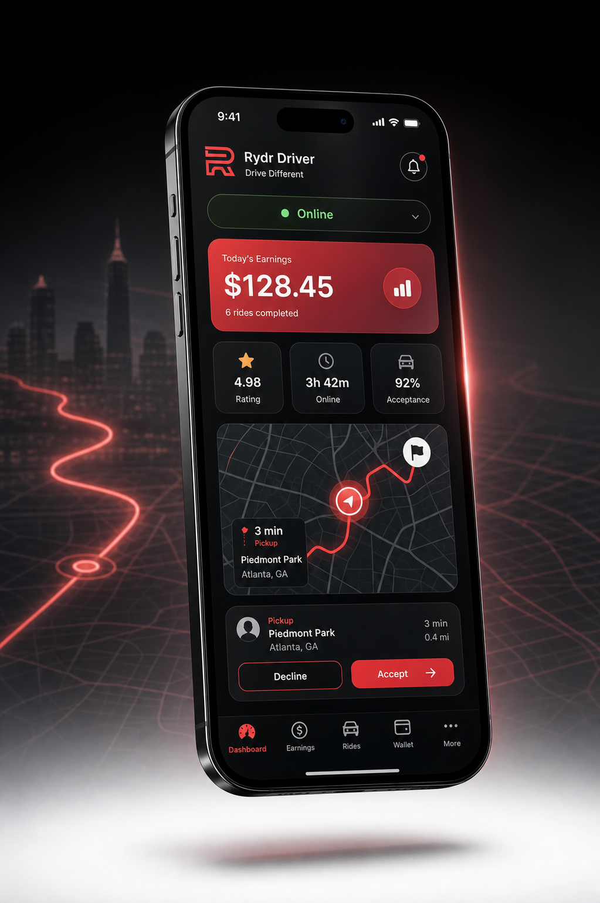
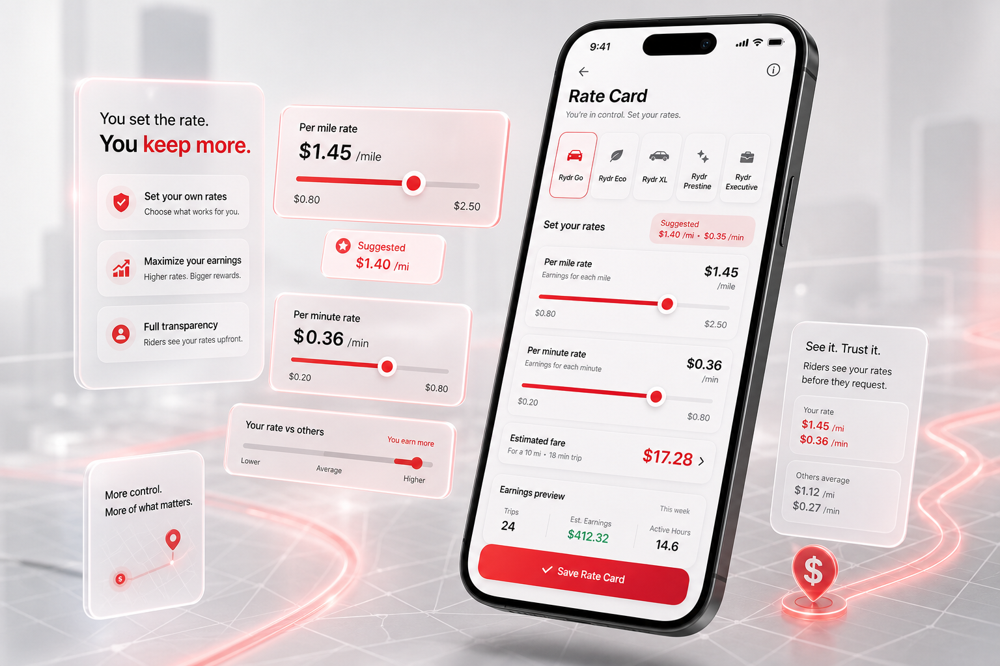
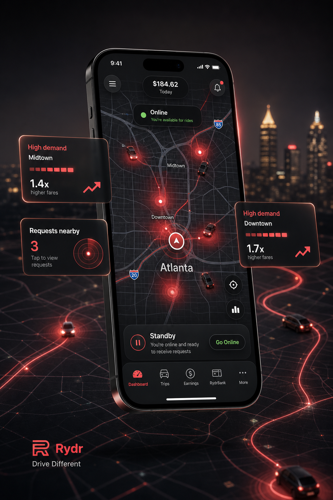
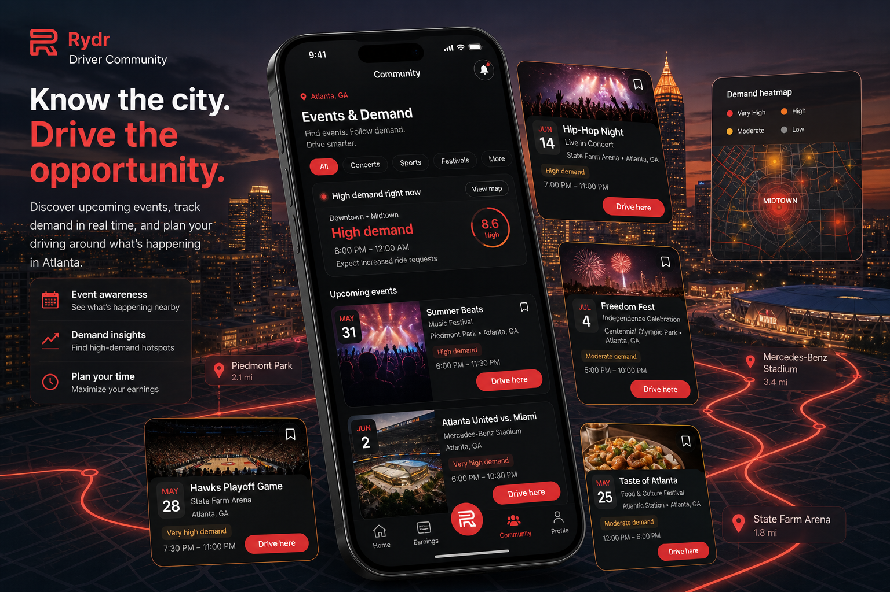
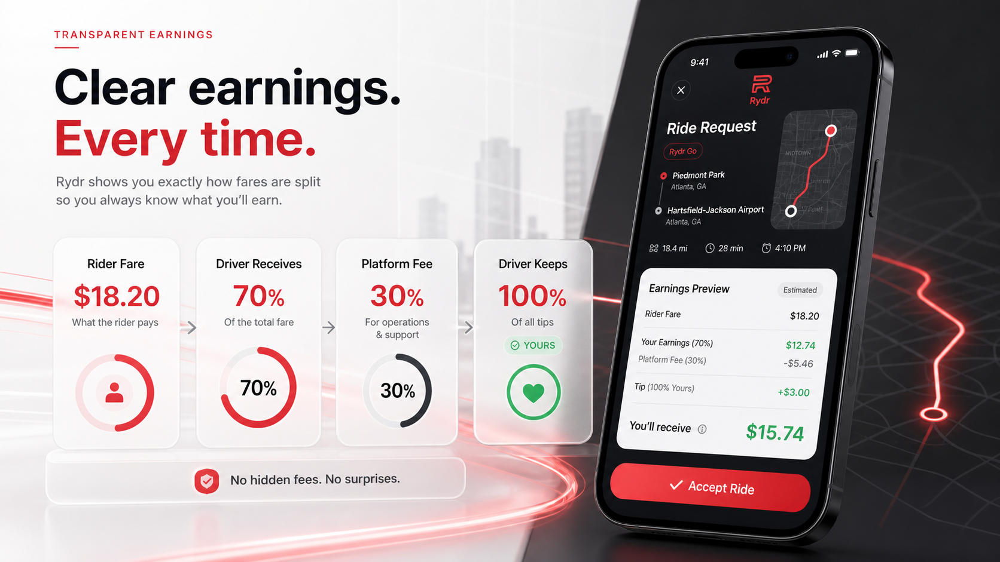

Reliability matters, but one decision should not define your driving record.
Rydr Driver
Drive Different.
Drivers have spent years asking the same question: "Is this ride worth it?" Rydr was built to give drivers more control over that answer. Set your own rates within each ride type, know exactly how your fares are calculated, and build your driving experience around the way you want to earn. Every trip begins with transparency, not guesswork.

Built for independent drivers
More control over how, where, and when you earn.
Rydr gives drivers transparent tools before the ride begins: rate control, live demand awareness, city-event insight, and clear fare math.
Rate Card
Set Rates That Work for You.
One price doesn't fit every driver. With the Rydr Rate Card, you choose your per-mile and per-minute rates within the limits of each ride type. Suggested pricing is available based on demand in your area, but the final decision is always yours. Adjust your rates while offline, once every hour, to better align with your schedule, driving goals, or changing demand. No surge multipliers. No guessing. Just transparent pricing built around your business.
Yourper-mile rate
Yourper-minute rate
1 hroffline adjustment window

Estimated fare$17.28

Nearby requestsLive demand rising
Positioning3 min away
Driver Dashboard
Know Where Demand Is Moving.
The Driver Dashboard is more than a map. It's your live view of activity across the city. Interactive ride request indicators highlight where riders are requesting trips, helping you identify areas with increasing demand whether you're online preparing to accept rides or offline planning where to drive next. Spend less time wondering where to go and more time positioning yourself where opportunities are growing.
Live request pings
Demand indicators
Online or offline insight
Smarter positioning
Community
Drive Where Opportunity Happens.
Community helps drivers stay connected to what's happening across the city. Discover concerts, sporting events, festivals, and other local gatherings that naturally increase transportation demand. Plan your driving schedule around upcoming events, anticipate busy areas, and position yourself where riders are already headed. It's another way Rydr helps drivers make informed decisions about when and where to drive.

TonightDemand near venues
Driver Standards
A Better Experience for Riders. A Better Platform for Drivers.
Great transportation starts with reliability and professionalism. Rydr monitors key performance indicators such as acceptance, cancellations, and on-time arrivals to help maintain a dependable experience for everyone using the platform. We understand that situations change and occasional declines or cancellations are part of driving. Rather than focusing on isolated events, we look for consistent driving patterns that support a reliable marketplace while giving drivers the flexibility they need.
Plans change. Rydr looks for consistent behavior, not single exceptions.
Riders deserve dependable pickup experiences, and drivers deserve clear standards.
Driver Qualifications
Ready to Drive?
Getting started is simple. Before accepting rides, every driver completes a short onboarding process designed to help keep the platform safe, reliable, and compliant.
Earnings
Know Where Your Fare Goes.
Before accepting a ride, drivers should understand the numbers. Rydr is designed to show the rider fare, your mileage and time-based earnings, the booking fee structure, and tips clearly.
Rider Fare
70%Driver receives
100%Tips stay yours

Drive with Rydr
Build your driving business differently.
Join the driver list for your market. Rydr will send next steps as driver availability opens.